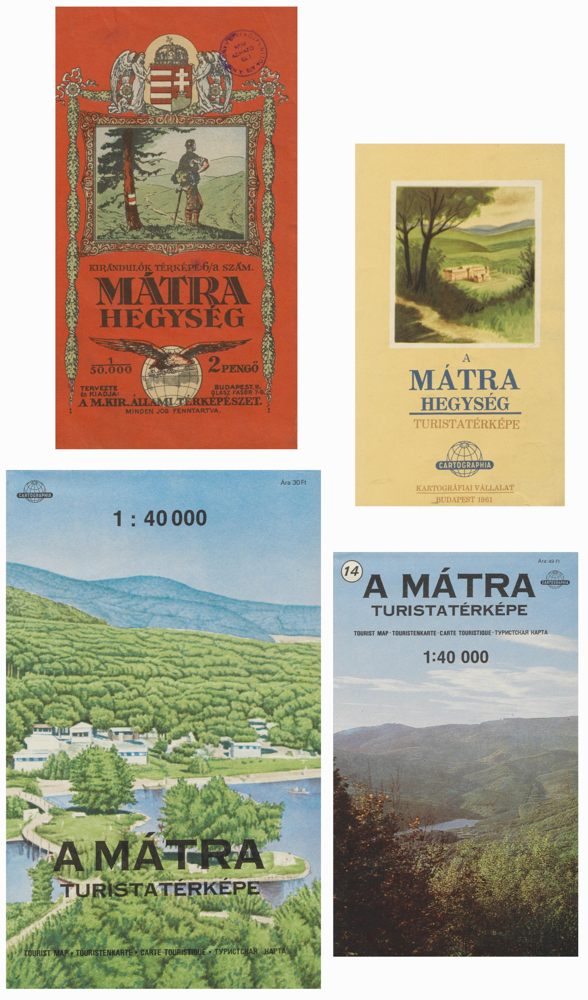

A magyar turistatérképek története
A kezdetektől 1989-ig
Előszó

A Turistatérképek története weboldal egy hobbi-projekt eredménye. Könnyű dolgom van, ha el kell mesélnem az utat, ami ide vezetett, mert pontosan meg lehet mondani, hogy mikor és hol kezdődött. Úgy értem, teljesen pontosan: 2024. május 21-én, délután 5 órakor a Curia utcai sportszövetségi székházban. Ekkor neveztem ugyanis a Kinizsi 100 teljesítménytúrára; aki volt már ezen, az tudja, hogy a székház egyik irodájában lehet ezt megtenni, talán a 3. vagy 4. emeleten. Az irodához vezető folyosó tele van régi turistatérképekkel: jórészt különféle Gerecse-térképek vannak a falakon, jó állapotban, szépen bekeretezve. Ezt már korábbi években is észrevettem, talán rá is néztem a térképekre, de ez alkalommal, én sem tudom miért, jobban megfogott a dolog, és a nevezés után elkezdtem nézegetni a térképeket. És rájöttem, hogy egészen el lehet veszni bennük. Érdekesek maguk a térképek is: hogy egyesek milyen részletesek, míg mások mennyire elnagyoltak, hogy mennyire jellegzetes hangulata tud lenni egy-egy térképnek, szinte saját stílusa van mindegyiknek… De ugyanígy érdekes az évtizedek alatt változó táj, a környezet is: látni, ahogy felfestettek egy új turistautat vagy pont hogy eltűnt egy, jé, ekkor még az országos kék átment a Gerecsén?, hogyan tűnt el a csőszkunyhó (vajon megvannak még a maradványai, ha odamennénk?), hogyan fejlődtek és bővültek egyes települések, hogy tűntek el mások… beszippantott a dolog, és azon vettem észre magam, hogy már negyedórája nézegetem a térképeket.
Hazamentem, de motoszkált bennem a dolog. Főztem magamnak egy teát, leültem a számítógép elé, és ekkor egy hirtelen ötlettől vezérelve megnyitottam az Országos Széchényi Könyvtár keresőjét. Kapok valamit arra, hogy „Gerecse turistatérkép”? (Utólag elég nevetséges, de nem voltam benne biztos, mégis csak könyv-tár, nem? – de természetesen van térképtáruk is.) Úgyhogy nem csak kaptam valamit, de a kereső kidobta az összes valaha elkészült Gerecse turistatérképet – ez olyan, mint a könyveknél a kötelespéldány, a Széchényi Könyvtár elvileg rendelkezik minden valaha kiadott magyar térképpel. Kezdett bennem körvonalazódni, hogy mit szeretnék: tegyük szisztematikussá a dolgot! Korábban már csináltam olyat, hogy a Széchényi Könyvtárral beszkenneltettem valamit, úgyhogy gyorsan megkérdeztem, hogy lehet-e ilyet csinálni térképeknél is – lehetett, úgyhogy két hét múlva az email-fiókomban volt az összes valaha kiadott Gerecse turistatérkép nagyon jó minőségben beszkennelt képként.
Hogyan tovább? Pár óra próbálkozás és küzdelem után nagyon lelkes lettem, mert feltaláltam egy egész fantasztikus megoldást: mi lenne, ha a beszkennelt régi térkép néhány pontját megfeleltetnék egy aktuális térképnek („valóság”), ez alapján egy program kiszámítaná, hogy a régi térkép milyen transzformációval vihető át a valós helyzetbe… hol kell megnyújtani vagy megrövidíteni, esetleg elforgatni? Lelkesedésemet egyedül az rontotta, amikor rájöttem, hogy sajnos ezt a fantasztikus megoldást már pár évtizeddel előttem felfedezték, sőt, azt is buktam, hogy magamról nevezzem el, mert már nevet is adtak neki: úgy hívják, hogy georeferálás. Cserében legalább van rá kész program, ami ezt megcsinálja… A georeferálás azért jó, mert ha két régi térképet is megfeleltetünk (ugyanannak) a valós helyzetnek, akkor azokat implicite megfeleltettük egymásnak is! Tehát „egymáson” van a két régi térkép, azaz elvileg látható, hogy mik változtak.
Most már csak valahogy meg kell jeleníteni ezt az eredményt – lehetőleg úgy, hogy az jól kezelhető, kényelmes és látványos legyen. A második cél tehát: tegyük valahogy hozzáférhetővé az eredményeket! Addig világos, hogy ehhez valamilyen informatikai támogatás kell, de milyen? Itt eszembe jutott, hogy több helyen láttam olyan megoldást interneten, amikor egy régi fotó mellé rakták ugyanazt a dolgot, például utcarészletet a jelenben lefotózva, úgy, hogy a két kép között egy függőleges elválasztóvonal van, amit balra-jobbra húzva lehet felfedni a régit vagy az újat. Ez pont jó lenne ide is! – gondoltam azonnal, hiszen nagyon jól megjelenítené a változásokat. A mai napig nem értem, de képtelen voltam erre kész alkalmazást találni georeferált térképekre, így összebarkácsoltam egy elég szörnyen kinéző, de nagyjából funkcionáló kézzel megírt weboldalt – és a dolog működött! Nekiálltam „csak gyorsan kipróbálni”, majd azt vettem észre, hogy már 10 perce nézem, ahogy megjelennek és eltűnnek utak, menedékházak, kilátók, ahogy változnak a települések, meg ahogy változnak maguk a térképek is. Ekkor már egyértelműen úgy éreztem, hogy ez a projekt érdekes lehet mások számára is: azoknak is izgalmas lehet, akiket a térképek érdekelnek, azoknak is, akiket a táj és az épített környezet változása, a történelem, és azoknak is, akiket a turistáskodás. Ráadásul – és most hadd legyek kicsit patetikus – azt gondolom, hogy ezen térképek közreadása és elérhetővé tétele egyfajta értékmentés is, hiszen, még ha nagyon speciális formában is, de ez mégis a kulturális örökségünk része. Egyszóval: elkezdtem gondolkozni a nyilvános közlés kérdésén.
Ezen a ponton vettem fel a kapcsolatot a Cartographia Kft.-vel, már pusztán jogi okok miatt is, hiszen ez a cég a jogutódja a szocialista éra alatt készült számos térkép kiadójának, a Kartográfiai Vállalatnak, így az engedélyük nélkül úgysem lennének közölhetőek ezek a térképek nyilvánosan. Jóval többet kaptam tőlük azonban, mint puszta engedélyt: számos ötlettel támogatták a munkámat, meghívtak a konferenciájukra és össze is kapcsoltak egy sor emberrel, akiket magam nem ismertem, de később sokat segítettek. Ezúton is köszönöm a támogatásukat.
Ezzel tehát elérkeztem a nyilvánosságra hozatal pontjához. Mi kell a nyilvános közléshez? Egyrészt egy normálisan kinéző weboldal, a korábbi, formázás nélküli teszt-oldalakhoz képest. Másrészt jó lenne, ha nem csak pár teszt-térkép lenne feltöltve, hanem minél több, hiszen végső soron a dolog erejét az adja, ha minél nagyobb átfogásban látszanak a változások. Mivel arra nincs kapacitásom, hogy minden hegység minden térképét megcsináljam kapásból, emiatt úgy döntöttem, hogy nem egy-két térképet töltök fel minden hegységből, hanem inkább minden térképet egy-két hegységből (épp azért, mert így érzékelhető jól a nagy időbeli átfogás). Végül kiválasztatottam pár hegységet az induláshoz (ezek persze később bővíthetőek, ha van rá érdeklődés); az Országos Széchényi Könyvtár pedig ismét hatalmas segítséget nyújtott, mert – annak ellenére, hogy immár elég nagy volumenről volt szó – gyorsan elvégezte a szükséges szkenneléseket és engedély-kiadásokat. Köszönöm a segítségüket ezúton is.
És ezzel: elindulhatott a https://www.tura-mult.hu/.
Még egy dolog jutott eszembe, mint ami még fontos lehet egy ilyen weboldalon: egy szöveges magyarázat, bemutató a témához. Ha nagyképű akarok lenni, tanulmány. Egy nagyon picit ennek a történetéről is hadd meséljek. Amikor a témával foglalkoztam, igyekeztem a térkép-szkennelésen és georeferáláson túl kicsit utána is olvasni. Részint, mert önmagában is érdekes dolgokat találtam, részint, mert sok esetben megadta a magyarázatát azoknak a jelenségeknek, amiket tapasztaltam a térképeken, de pusztán a térképet nézegetve nem derültek ki az okok. Miért volt az, hogy az 1930-as években készült térképek nagyon részletesek voltak, aztán az 1950-es években szinte minden eltűnt a térképekről, hogy aztán 1970-től újra elkezdjenek visszakerülni? Miért van az, hogy az 1950-es években készült térképeken néha derékszögben fordulnak be vasútvonalak? Miért van az, hogy az 1970-es évek térképein minden szomszédos hegység mintha direkt más méretarányban készült volna? Miért van az, hogy 1930-as évek térképein háromféle különböző északi irány (mágneses, csillagászati, hálózati) is fel van tüntetve, egyáltalán, mit jelentenek ezek? Mi az a lejtőalapmérték az 1980-as évek térképein és mi az átlós aránymérték az első magyar turistatérképen? (Egyáltalán, melyik az első magyar turistatérkép?)
Egyszóval az utánaolvasás során nagyon sok olyan dolgot megismertem, amik magukat a térképeket nézegetve nem derülnek ki, de szerintem mégis fontosak és érdekesek. Az olvasgatás során azonban sokkal többre is választ kaptam: tanultam a turistamozgalom történetéről, fénypontjairól és sötét napjairól is. Úgy éreztem, jó lenne mindezeket egy helyen összefoglalni. Ebben az írásban tehát egyaránt szó lesz térképészeti és társadalmi kérdésekről, geomágnesességről és politikai változásokról, szintvonalakról és történelemről. Remélem, hogy ez jó kiegészítője a régi térképeknek, és talán önmagában is érdekes lehet, mind a térképek, mind a történelem, mind a turistáskodás után érdeklődőek számára.
Úgyhogy: vágjunk bele!